O Harumi Auto OS troca a interface da central por um sistema próprio, com mapas, música, painel do carro e a assistente Harumi: conversa, reconhecimento de fala e voz funcionam sem internet.
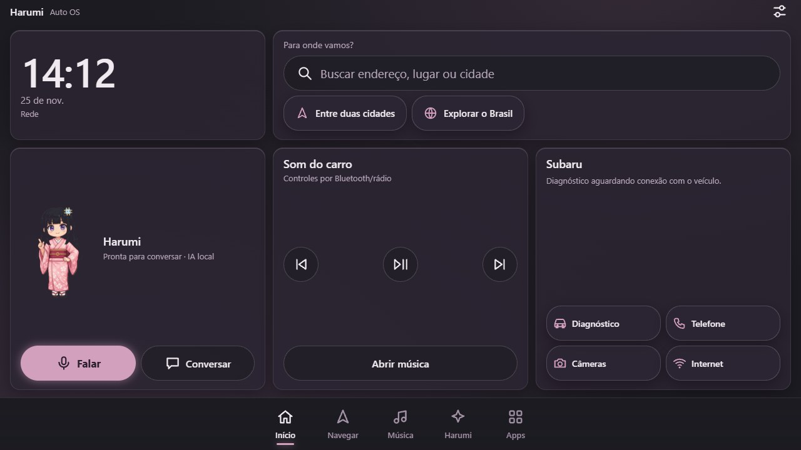
Botões grandes, tema escuro e tudo a um toque: destino, música, a assistente e o estado do carro. Funciona na tela de 7" original e num monitor maior com tela dividida.
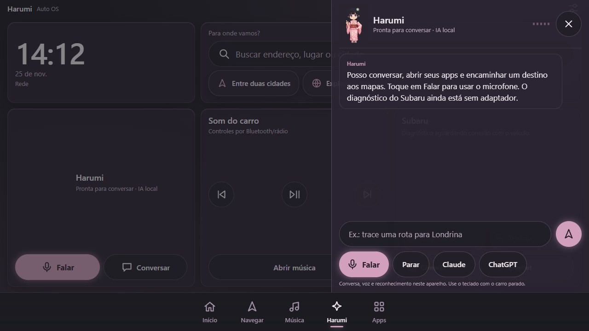
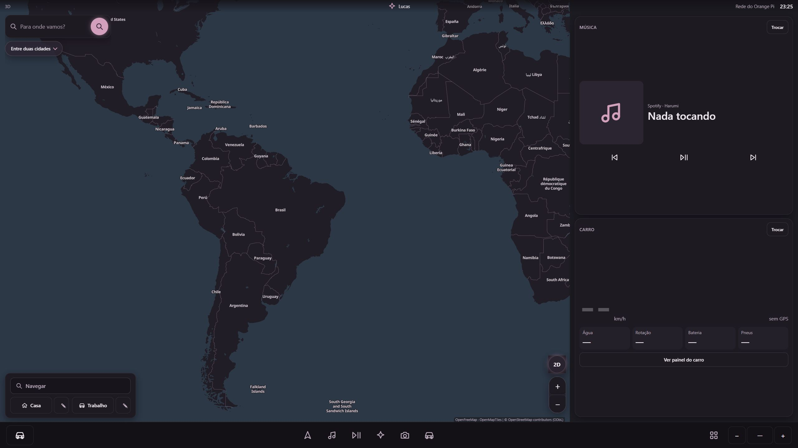
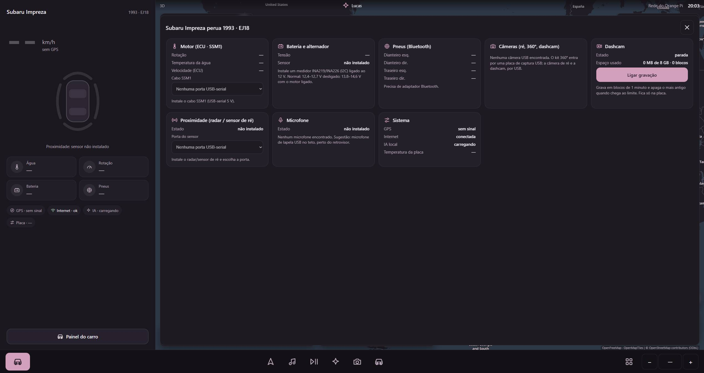
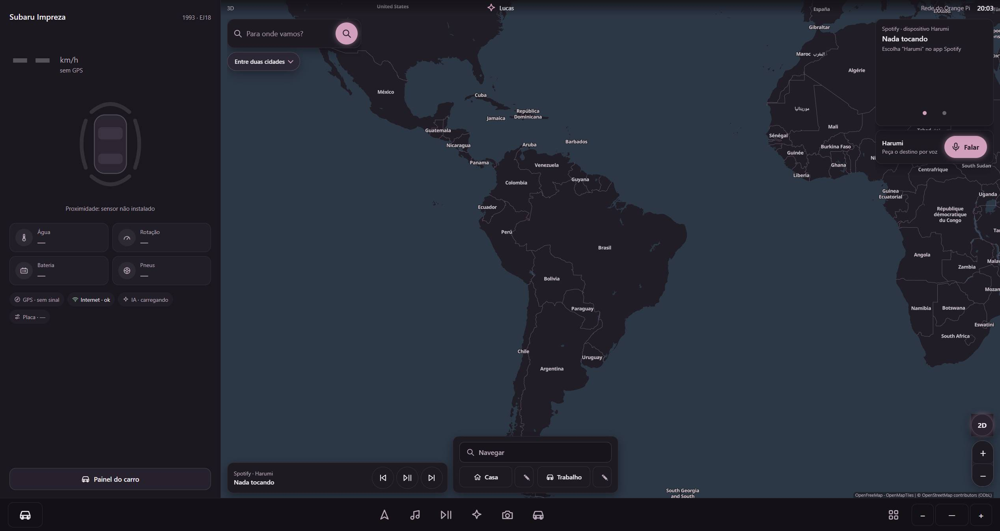
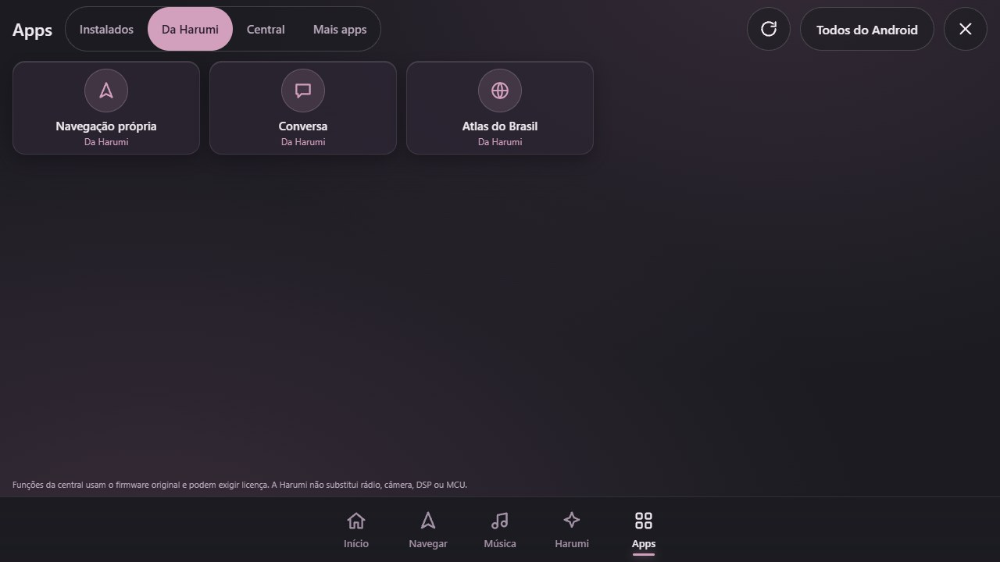
llama.cpp com Qwen, Vosk para fala em português e voz sintetizada no aparelho.
Conversas só na memória da sessão, sem gravação de áudio; a IA não executa comandos de sistema.
Sem OBD-II: dados do motor pelo cabo SSM1, bateria pelo INA226 e pneus por TPMS Bluetooth.
Modelo interativo da instalação: central embaixo do painel do passageiro, tela de 13,3" no tampo, sensores nos para-choques e bateria do modo vigia no porta-malas. Gire, aproxime e toque numa peça para ver medida e onde ela liga.
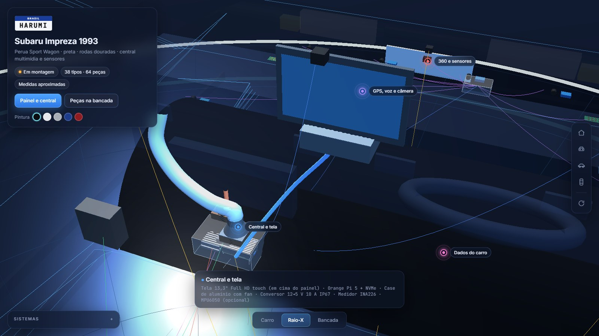
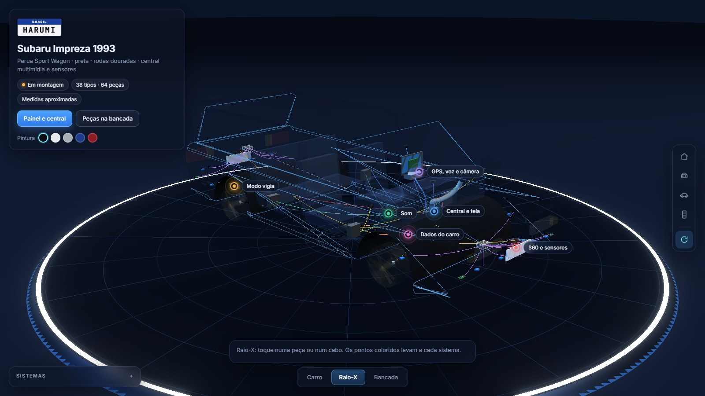
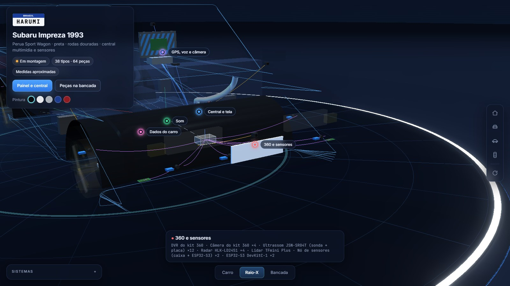
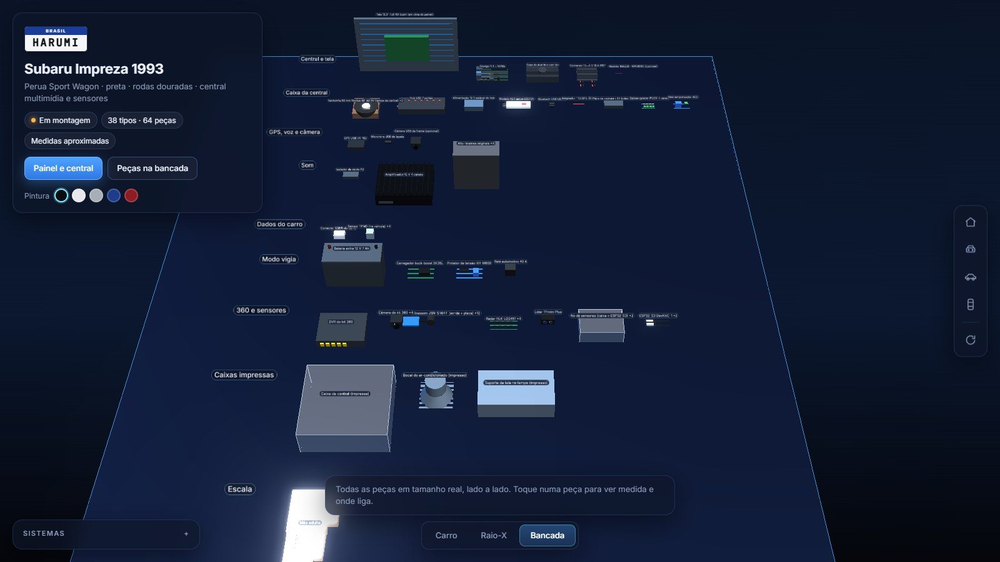
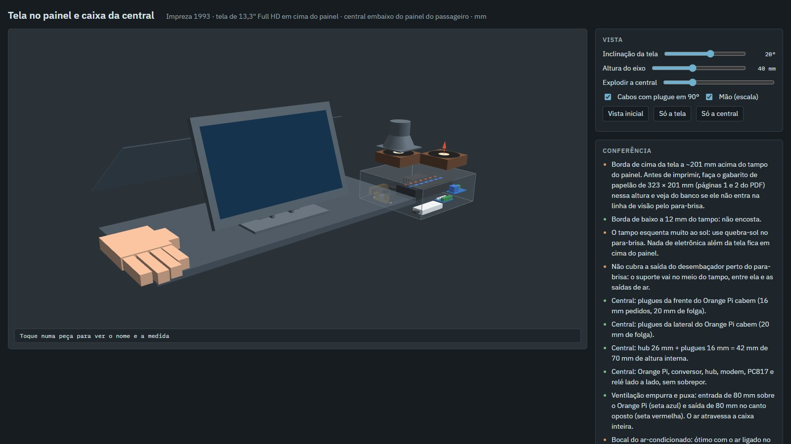
Tudo passa pelo Orange Pi 5. As cores são as mesmas dos cabos no modelo 3D.
38 tipos e 64 peças no total. Medidas em milímetros; as marcadas no modelo 3D como estimadas ainda serão conferidas no carro.
| Sistema | Peças | Onde fica |
|---|---|---|
| Central e tela | Orange Pi 5 + NVMe em case de alumínio, conversor 12→5 V, INA226, tela 13,3" Full HD touch | Caixa impressa embaixo do painel do passageiro; tela no tampo do painel |
| Caixa da central | Hub USB 7 portas, modem 4G E3372h, Bluetooth UB500, FT232RL, captura USB, PC817, relé ACC, 2 ventoinhas Noctua 80 mm | Dentro da caixa (205 × 195 × 73) |
| GPS, voz e câmera | GPS VK-162, microfone USB, câmera frontal | Tampo do painel e coluna |
| Som | Isolador de ruído, amplificador 4 canais, 4 alto-falantes originais | Amplificador embaixo do banco |
| Dados do carro | Cabo SSM1, 4 sensores TPMS | Embaixo do painel e nas rodas |
| Modo vigia | Bateria 12 V 7 Ah, SK35L, XH-M609, relé 40 A | Porta-malas |
| 360 e sensores | Kit 360 (DVR + 4 câmeras), 12 ultrassons JSN-SR04T, 4 radares HLK-LD2451, lidar TFmini Plus, 2 nós com ESP32-S3 | Para-choques, retrovisores e traseira |